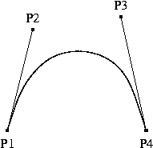
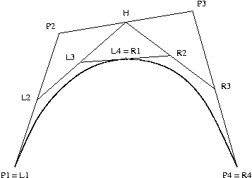

Les courbes de Bézier sont des courbes de degré 3. Elles sont donc déterminées par quatre points de contrôle. La courbe déterminée par les points P1, P2, P3 et P4 va de P1 à P4 et ses dérivées en P1 et P4 sont respectivement 3(P2 - P1) et 3(P3 - P4). Ceci signifie en particulier que la courbe est tangente en P1 et P4 aux droites P1P2 et P3P4.

Fig. 1 : Courbe de Bézier
Si les coordonnées des points de contrôle sont (x1, y1), (x2, y2), (x3, y3) et (x4, y4), l'équation de la courbe est
x(t) = (1-t)3x1 + 3t(1-t)2x2 +
3t2(1-t)x3 + t3x4
pour 0 ≤ t ≤ 1
y(t) = (1-t)3y1 + 3t(1-t)2y2 +
3t2(1-t)y3 + t3y4
pour 0 ≤ t ≤ 1
L'applette ci-dessous permet d'expérimenter la forme de la courbe de Bézier en fonction de la position des points de contrôle. La courbe évolue lorsque les points de contrôle sont déplacés à la souris.
La méthode de Casteljau permet la construction géométrique de points de la courbe. Soient P1, P2, P3 et P4 les points de contrôle et soient L2, H et R3 les milieux des segments P1P2, P2P3 et P3P4. Soient L3 et R2 les milieux des segments L2H et HR3 et soit L4 = R1 le milieu du segment L3R2 (cf. Figure 2). Le point L4 = R1 appartient à la courbe de Bézier et il est obtenu pour t = 1/2. De plus la courbe se décompose en deux courbes de Bézier : la courbe de points de contrôle L1 = P1, L2, L3 et L4 et la courbe de points de contrôle R1, R2, R3 et R4 = P4. Cette décomposition permet de poursuivre récursivement la construction de points de la courbe.
On remarque que chaque point de la courbe est barycentre des points de contrôle affectés des poids (1-t)3, 3t(1-t)2, 3t2(1-t) et t3. Comme tous ces poids sont positifs, la courbe se situe entièrement dans l'enveloppe convexe des points de contrôle.
Si dans la construction précédente, les milieux sont remplacés par les barycentres avec les poids t et 1-t, on obtient le point de la courbe de coordonnées x(t), y(t).

Fig. 2 : Construction de Casteljau
Les courbes B-splines sont aussi des courbes de degré 3. Elles sont donc aussi déterminées par quatre point de contrôle. Contrairement à une courbe de Bézier, une B-spline ne passe par aucun de ses points de contrôle. Par contre, les B-splines sont adaptées pour être mises bout à bout afin de former une courbe ayant de multiple points de contrôle.
Soient n+3 points P1,…,Pn+3. Ils déterminent n B-spline s1,…,sn de la manière suivante. Chaque B-spline si est déterminée par les points de contrôle Pi, Pi+1, Pi+2 et Pi+3.
Si les coordonnées des points de contrôle sont (x1, y1), …, (xn+3, yn+3), l'équation de la spline si est
xi(t) = 1/6[(1-t)3xi +
(3t3-6t2+4)xi+1 +
(-3t3+3t2+3t+1)xi+2 +
t3xi+3]
pour 0 ≤ t ≤ 1
yi(t) = 1/6[(1-t)3yi +
(3t3-6t2+4)yi+1 +
(-3t3+3t2+3t+1)yi+2 +
t3yi+3]
pour 0 ≤ t ≤ 1
À partir des équations définissant les splines si, on vérifie facilement les formules suivantes qui montrent que la courbe obtenue en mettant bout à bout les courbes si est de classe C2, c'est à dire deux fois dérivable.
si(1) = si+1(0) =
1/6(Pi+1 + 4Pi+2 + Pi+3)
s'i(1) = s'i+1(0) =
1/2(Pi+3 - Pi+1)
s''i(1) = s''i+1(0) =
Pi+3 - 2Pi+2 + Pi+1
L'applette ci-dessous permet d'expérimenter la forme des B-splines en fonction de la position des points de contrôle. Le bouton gauche permet de déplacer les points de contrôle et le bouton droit d'en ajouter.
Puisque seules les courbes de Bézier sont présentes en Swing, il est nécessaire de savoir passer d'une B-Spline à une courbe de Bézier. La B-spline de points de contrôle P1, P2, P3 et P4 est en fait la courbe de Bézier dont les points de contrôle P'1, P'2, P'3 et P'4 sont calculés de la manière suivante. Si les coordonnées des points P1, P2, P3 et P4 sont (x1, y1), (x2, y2), (x3, y3) et (x4, y4), les coordonnées (x'1, y'1), (x'2, y'2), (x'3, y'3) et (x'4, y'4) des points P'1, P'2, P'3 et P'4 sont données par les formules suivantes pour les premières coordonnées et des formules similaires pour la seconde.
| x'1 | = 1/6 | ( | x1 | + | 4x2 | + | x3 | ) | ||
| x'2 | = 1/6 | ( | 4x2 | + | 2x3 | ) | ||||
| x'3 | = 1/6 | ( | 2x2 | + | 4x3 | ) | ||||
| x'4 | = 1/6 | ( | x2 | + | 4x3 | + | x4 | ) |
Les formules suivantes permettent la transformation inverse
| x1 | = | 6x'1 | - | 7x'2 | + | 2x'3 | ||
| x2 | = | 2x'2 | - | x'3 | ||||
| x3 | = | - | x'2 | + | 2x'3 | |||
| x4 | = | 2x'2 | - | 7x'3 | + | 6x'4 |